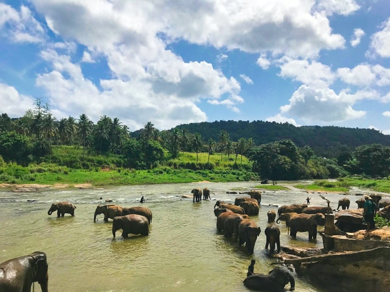

Explore Sri Lanka

Wildlife
Wildlife in Sri Lanka is an entirely different class of beauty and thrill. Sri Lanka's wildlife sanctuaries are a class of protected areas providing shelter for many species of widlife.
See more
Beaches
Surrounded by the Indian Ocean, Sri Lanka has the best beaches and amazing view all aroung the country.
See more
Nature
Sri Lanka has a very beautiful and attractive nature with the best scenaries. It comprises with waterfalls, rivers , mountains and many more.
See more